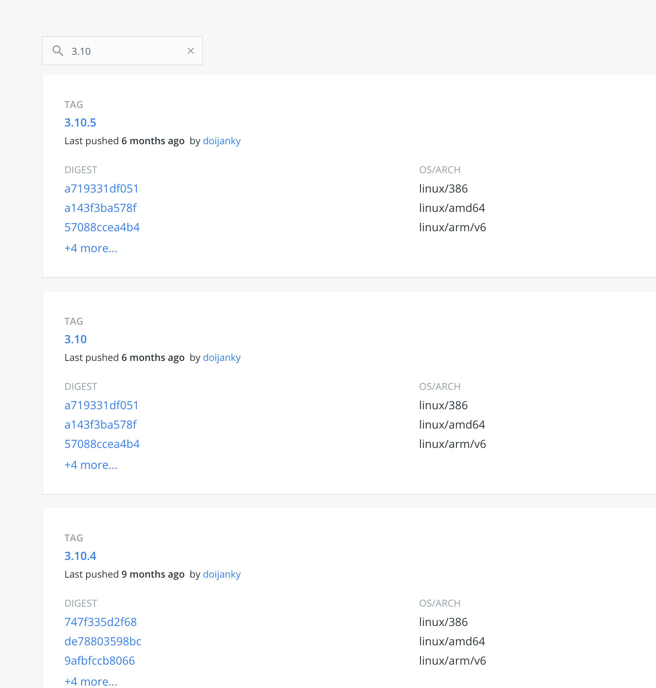

什么是仓库？
镜像构建完成后，可以很容易的在当前宿主机上运行，但是，如果需要在其它服务器上使用这个镜像，我们就需要一个集中的存储、分发镜像的服务， Docker Registry （docker 官方提供的镜像管理平台）就是这样的服务。
一个 Docker Registry 中可以包含多个 仓库（ Repository ）；每个仓库可以包含多个 标签（ Tag ）；每个标签对应一个镜像。
tag
同一个仓库，就是给一个应用使用的，不同版本使用 tag 来标识。我们可以通过 <仓库名>:<标签> 的格式来指定具体是这个软件哪个版本的镜像。如果不给出标签，将以 latest 作为默认标签。

tag 例子
以 Ubuntu 镜像 为例， ubuntu 是仓库的名字，其内包含有不同的版本标签，如， 16.04 , 18.04 。
我们可以通过 ubuntu:16.04 ，或者 ubuntu:18.04 来具体指定所需哪个版本的镜像。如果忽略了标签，比如 ubuntu ，那将视为 ubuntu:latest 。
仓库名两段式命令
仓库名经常以 两段式路径 形式出现，比如 minibear2333/gitbook-export ，前者一般代表 Docker Registry 中注册用户的用户名，后者对应的软件名。
全名： minibear2333/gitbook-export:latest
但这并不绝对，取决于所使用的具体 Docker Registry 的软件或服务。
也有使用三段式，分别是 私有镜像仓库 url 、不同层服务的名称、服务名称.
以后
关于怎么提交自己的镜像向个人仓库、怎么使用私人仓库，后面会讲到。
引用
公众号
如果你想订阅我的文章，可以微信扫码关注我的公众号【机智的程序员小熊】，我是一个爱思考的程序员，专注于开发、运维、云技术、计算、网络、云存储、数据库、linux等编程知识